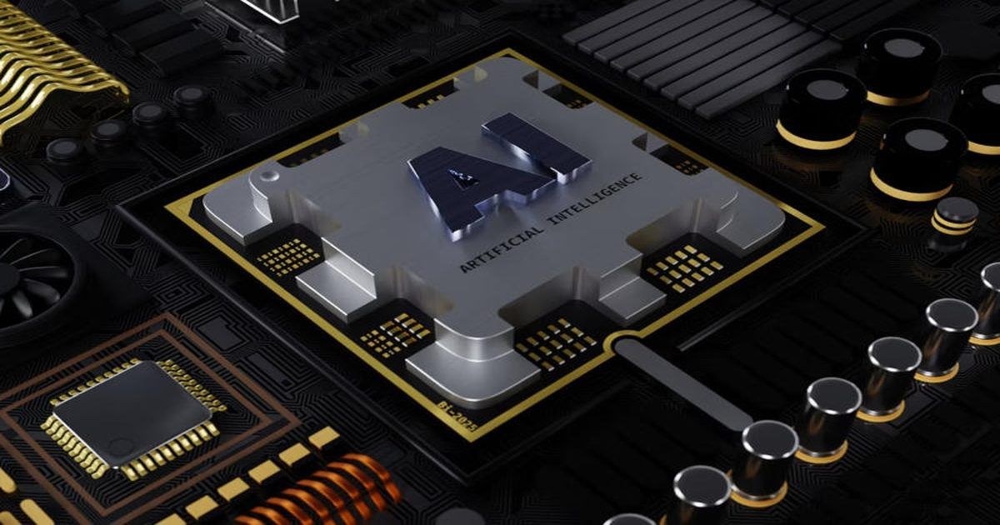

Anthropic поручила Claude проектировать чипы — на Уолл-стрит испугались за Synopsys и Cadence
Anthropic стала обращать внимание инвесторов на своё новое конкурентное преимущество — использование искусственного интеллекта при разработке полупроводников.
В компании создано подразделение по разработке оборудования — сейчас в нём числятся 15 специалистов.
Источник изображения: BoliviaInteligente / unsplash.com